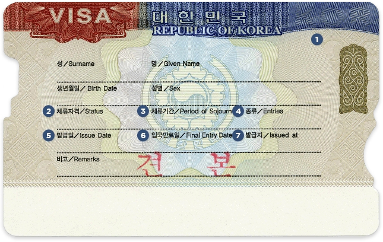

비자 종류와 정보를 쉽게
확인하세요.
현재 국적으로 보유한 국가를 선택하고 목적 국가를 입력하면 최적화된 비자발급과 관련한 정보가 보여집니다.
해당되지 않을 경우 전체 리스트를 통해 확인할 수 있습니다.
Step 1 1/3
나는 사람이고,
한국에 (으)로
방문 예정입니다.Quick Finder
-
STEP1 내가 살고 있는 나라를 선택해 주세요.
-
STEP2 국가에 방문하는 목적을 선택해 주세요.
-
STEP3 여러 개의 발급 가능한 비자를 확인 해 주세요.
자주 검색된 비자 안내
- 관광 등 단기방문 비자면제, 일반무비자, 제주무비자, 단기일반, 단체관광등, 일반상용, 혐정단기상용, 단기상용, 동포방문, 일반관광, 관광취업, 순수환승
- 전문직 취업 단기취업, 구직활동, 기술창업활동, 교수, 일반회화강사,학교보조교사, FTA영어, 연구, 기술지도, 전문직업, 예술연예, 호텔유흥 운동, 특정활동, FTA독립 특정능력
- 주재 외국기업, 내국기업, FTA전근, FTA계약
- 결혼, 이민 국민배우자, 자녀양육
입국목적별 비자 종류
수수료
비자발급 신청에 따른 기본 수수료 (미국달러 기준)
| 비자구분 | 금액 |
|---|---|
| 체류기간 90일 이하의 단수비자 | 40 달러 |
| 체류기간 91일 이상의 단수비자 | 60 달러 |
| 2회까지 입국할 수 있는 더블비자 | 70 달러 |
| 입국 횟수에 제한이 없는 복수비자 | 90 달러 |
- 기본 심사 수수료 규정에도 불구하고 국제관례 또는 상호주의 원칙 그 밖에 법무부령이 정하는 사유에 의하여 필요하다고 인정할 때에는 수수료를 면제하거나 다르게 정할 수 있습니다.
- 또한 국가 간 협정에 따라 비자 수수료에 관한 규정이 별도로 있는 경우에는 협정내용에 따라 수수료가 부과됩니다.
- 지정여행사에서 인솔하는 중국인 단체관광객에 대한 비자 심사수수료 : 1인당 15달러 상당
- 베트남 국민에 대한 C-3 계열 단수비자 : 30달러 상당
- 비자수수료는 비자심사 업무처리에 소요되는 비용을 부과하는 것이므로 비자발급 결과와 관계없이 비자신청 시에 수수료가 징수됩니다. 따라서 비자발급이 불허되는 경우에도 수수료는 반환되지 않습니다.
전자민원 수수료
비자 포털 상에서 처리되는 비자 심사 수수료는 미국달러로 부과됩니다. 신용카드로 결제할 경우 결제일과 청구일의 미국 달러화 환율에 따라 청구금액이 달라질 수 있으니 이점 유의하시기 바랍니다.
추가 수수료
비자 포탈에서 전자비자 신청 시 비자 심사 수수료 이외에 카드사용 및 전자결제 대행서비스 이용에 따른 추가 수수료가 부과됩니다.
사용가능한 결제수단
국제적으로 통용되는 신용카드
-
VISA
-

Master
-

JCB
-
American Express
-

Unionpay
입국 및 체류
입국절차
| 입국요건 |
대한민국에 입국하고자 하는 외국인은 아래와 같은 입국요건을 갖추어야 합니다.
|
|---|---|
| 비자의 종류와 유효기간 |
단수비자 : 유효기간 내에 1회에 한하여 입국할 수 있습니다.

대한민국 비자
|
| 입국신고서 |
대한민국에 입국하는 외국인은 대한민국 출입국항에서 출입국심사관의 입국심사를 받아야 합니다. 
대한민국 입국신고서 |
외국인등록 대상 및 절차
| 외국인등록 대상 |
아래 외국인은 입국일로부터 90일 이내에 주소지를 관할하는 출입국·외국인관서에 외국인등록을 하여야 합니다.
|
|---|---|
| 외국인등록사항 변경 신고의무 |
외국인등록을 한 외국인이 아래 신고사유에 해당하는 변경이 있을 때에는 사유가 발생한 날로부터 14일 이내에 본인 또는 대리인이 관할 출입국·외국인관서에 외국인등록사항 변경신고를 하여야 합니다.
|
외국인의 활동범위와 취업
| 외국인의 활동범위와 취업 |
|
|---|
신청절차
비자포털을 통한 전자비자신청
| 신청경로 | 비자포털 신청 메뉴 |
|---|---|
| 신청자 |
외국인 본인 또는 초청자에 의한 대리신청 |
| 신청가능한 체류자격 (2014.12.08 기준) |
※ 신청가능한 체류자격과 제출서류에 대한 자세한 정보는 비자 내비게이터를 이용하시기 바랍니다. |
| 준비서류 |
|
| 처리절차 |
외국인 본인 신청절차
초청인 대리 신청절차
|
제외공관을 통한 비자신청
| 신청장소 |
거주국(지역) 관할 대한민국 대사관 또는 영사관 |
|---|---|
| 신청자 |
외국인 본인 또는 비자신청 대행업체(지정 여행사)에 의한 대리 신청 |
| 신청가능한 체류자격 (2014.12.08 기준) |
※ 신청가능한 체류자격과 제출서류에 대한 자세한 정보는 비자 내비게이터를 이용하시기 바랍니다. |
| 준비서류 |
|
| 처리절차 |
※ 기타 궁금한 사항은 거주국(관할지역) 재외공관 영사과로 문의하시기 바랍니다. |
비자포털을 통한 비자발급인정서 신청
| 신청경로 | 비자포털 신청 메뉴 |
|---|---|
| 신청자 |
초청자에 의한 대리 신청 |
| 신청가능한 체류자격 (2014.12.08 기준) |
※ 신청가능한 체류자격과 제출서류에 대한 자세한 정보는 비자 내비게이터를 이용하시기 바랍니다. |
| 준비서류 |
|
| 처리절차 |
|
| 비자발급인정서 심사결과 확인 |
비자발급인정서 심사결과는 비자포털의 진행상황 조회, 신청서에 기재한 초청자의 E-MAIL 또는 |
| 비자신청 |
※ 비자발급인정서의 유효기간은 3개월이며, 1회 비자발급에 한하여 그 효력이 인정됩니다. 기타 궁금한 사항은 외국인종합안내센터 (국번없이 1345, 외국에서는 +82-1345)로 문의하시기 바랍니다. |
국내 출입국·외국인관서를 통한
비자발급인정서 신청
| 신청장소 |
초청자의 주소지 관할 출입국·외국인관서 |
|---|---|
| 신청자 |
외국인 본인, 초청자 또는 대행기관(E-9, E-10) 등에 의한 대리 신청 |
| 신청가능한 체류자격 (2014.11.01 기준) |
※ 신청가능한 체류자격과 제출서류에 대한 자세한 정보는 비자 내비게이터를 이용하시기 바랍니다. |
| 준비서류 |
|
| 비자발급인정서 처리절차 |
|
| 비자발급인정서 심사결과 통지 |
비자발급인정서 심사결과는 비자포탈의 진행상황 조회, 신청서에 기재한 초청자의 E-MAIL 또는 |
| 비자발급 |
※ 비자발급인정서의 유효기간은 3개월이며, 1회 비자발급에 한하여 그 효력이 인정됩니다. 기타 궁금한 사항은 외국인종합안내센터 (국번없이 1345, 외국에서는 +82-1345)로 문의하시기 바랍니다. |